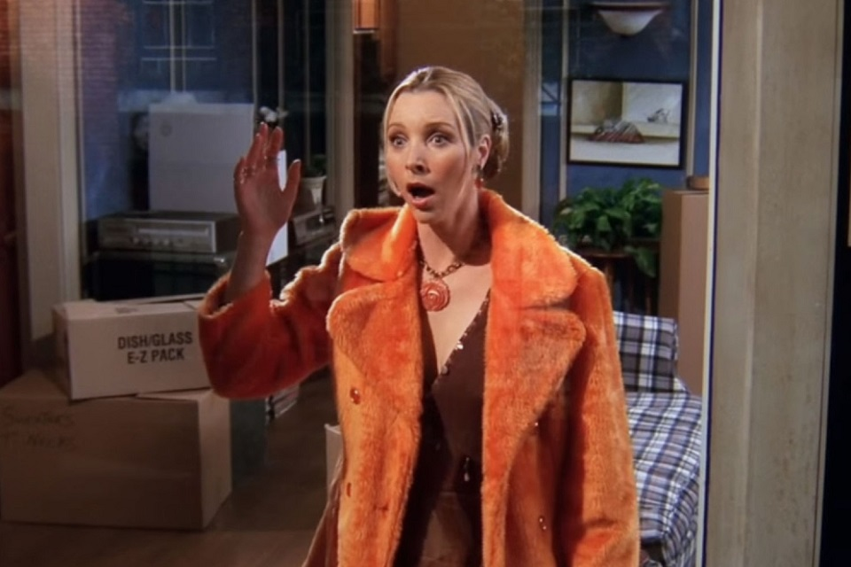
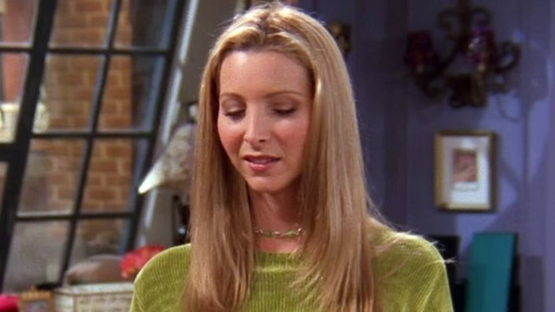
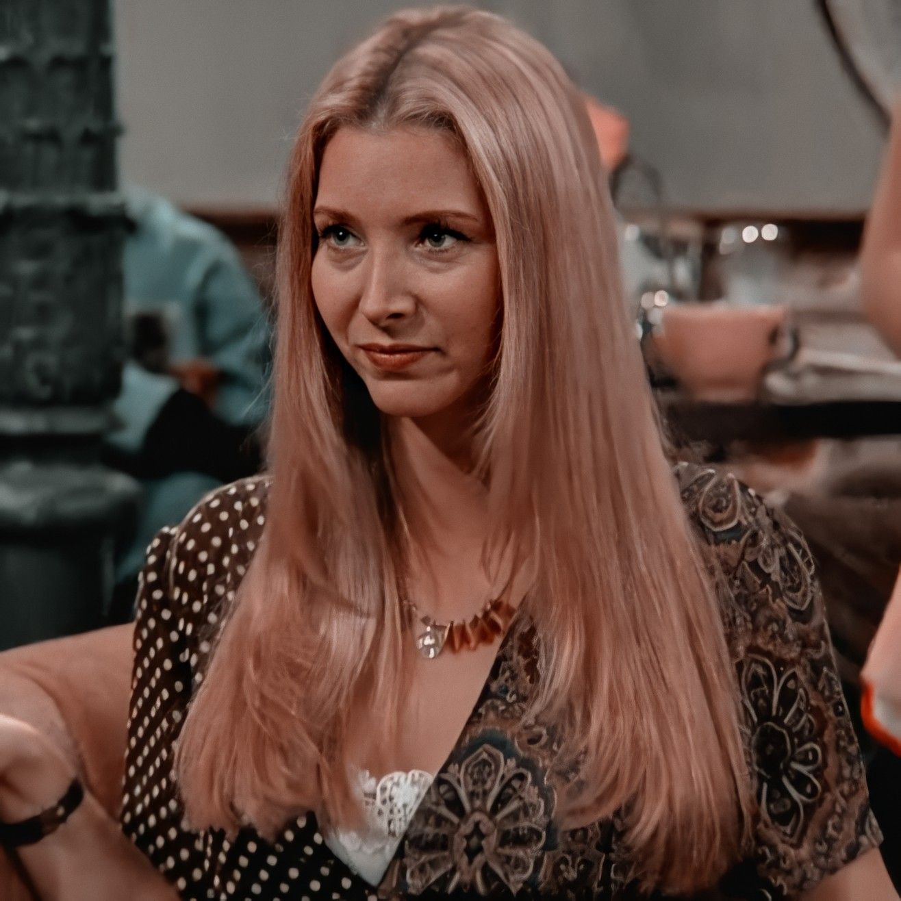

1. A irma de Phoebe, Ursula, apareceu em quantos episodios da serie?
4
8
12
14
2. Qual dessas informacoes eh falsa?
Phoebe fala Frances e Italiano
Phoebe eh vegetariana
Phoebe nao come nada que tenha rosto
Phoebe nao acredita em reencarnacao
3. Desses trabalhos, qual Phoebe nao trabalhou como?
Assaltante
Professora de Frances
Massagista
Correstora da bolsa de valores
4. Porque Phoebe parou de morar com a Monica, no comeco da serie?
Porque ela nao aguentava mais a mania de limpeza da Monica
Porque ela ganhou na loteria e resolveu se mudar
Porque ela precisava se encontrar com o seu eu interior, morando sozinha
Porque sua avó estava doente, entao ela foi morar com ela
5. Em qual mes Phoebe nasceu?
Fevereiro
Abril
Junho
Setembro